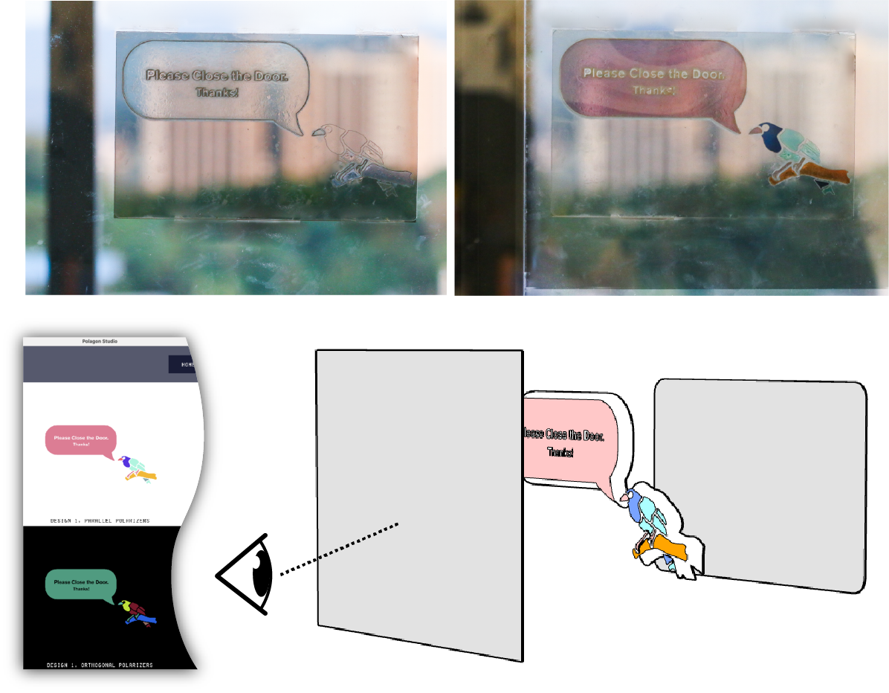
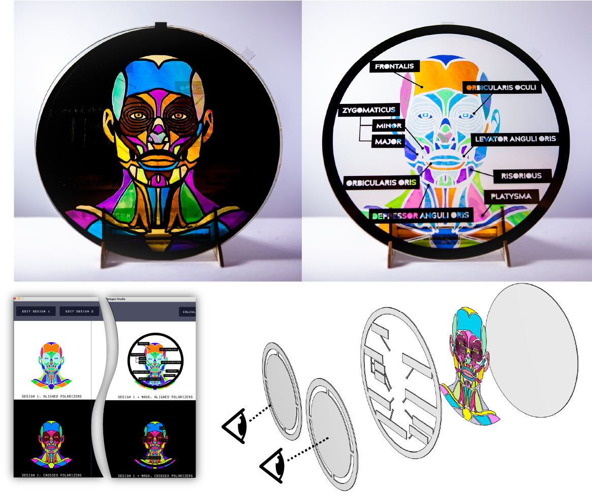

Project Team
Ticha Sethapakdi, Laura Huang, Vivian Hsinyueh Chan, Lung-Pan Cheng, Fernando Fuzinatto Dall'Agnol, Stefanie Mueller.
Video
Polagons: Designing and Fabricating Polarized Light Mosaics with User-Defined Color-Changing Behaviors


Figure 1. An animated clock, data physicalization, and reconfigurable glasses created with our system. These examples were made without pigments or special technologies.
Polarized light mosaics are handmade collages crafted from clear material that changes its appearance based on the angle of incident polarized light. We introduce Polagons: machine-made polarized light mosaics with user-defined color-changing behaviors. Our end-to-end system comprises of: Polagon Studio, a tool which allows users to design and visualize Polagons, and a custom fabrication process based on laser cutting and welding that requires minimal manual assembly.
MOTIVATION
Objects with color- or appearance-changing properties are an emerging area of interest in Human-Computer Interaction (HCI) research, as they provide end users with the promise of customization on the go. However, appearance-changing artifacts do not typically exist outside of electronic displays. This is a natural consequence of how digital pixels are more easily re-configurable than physical matter.
Prior to digital display technologies, scientists, artists, and engineers developed a variety of "low-tech" methods for changing the appearance of physical objects. One such method uses birefringent materials. Birefringent materials have a special property which allows them to change their appearance depending on how polarized light passes through them. A handful of artists have taken advantage of the unique properties of birefringent materials to create color-changing artwork, known as polarized light mosaics. To create these mosaics, the artists used common birefringent household materials (e.g., cellophane films and packaging tape), cut out their desired shapes with scissors or craft knives, and controlled the color effects by carefully layering and rotating the cutouts. While the majority of polarized light mosaics depict only a single image, some artists developed techniques for embedding multiple images into their mosaics. A notable example of this is the artist Austine Wood Comarow, who created elaborate morphing images which she called "Polage". Viewers interact with her work through a polarizing filter that, when rotated, changes the appearance of the image.
While polarized light mosaics currently exist as a unique art form, they have the potential to be a new "programmable material" in HCI. However, polarized light mosaics pose a high barrier to entry to users due to a number of design and fabrication challenges. Firstly, it takes time for novices to acquire an intuitive understanding of how the material behaves, i.e., being able to precisely control the color effects requires an understanding of the underlying physics. Thus, users without the domain-expert knowledge must resort to trial and error in crafting their desired colors and effects. Even a seasoned artist like Comarow, who developed this art form for over 40 years, iteratively built up the colors by repeatedly checking them with polarizers while layering cut sheets of cellophane.
Even with a comprehensive understanding of the underlying physics, the material is physically challenging to work with. As described above, the mosaics are made from cellophane or packaging tape, which are very thin and prone to warping or tearing. Cutting the material requires good motor skills and thus designs with complex geometries are difficult to make manually. The assembly process is yet another challenge: since color is affected by the incident angle of light, any subtle shift in the layers can produce undesired color results.
To address the aforementioned challenges, we present the first end-to-end system for designing and fabricating machine-made polarized light mosaics with user-defined color changing behaviors (which we call "Polagons"). Our system includes an interface for designing and visualizing Polagons and a fabrication process based on laser cutting and welding that requires minimal assembly by the user.
DESIGN SPACE
Similar to how stained glass mosaics are made from disjoint shards of glass held together by plaster, Polagon mosaics are constructed from disjoint pieces of cellophane held together by an acrylic base. The assembled Polagon mosaic is then sandwiched between two polarizers. For clarity, we refer to the polarizer that the viewer looks through as the analyzer and the second polarizer as the polarizer}. When we say "the polarizers", we are referring to both the polarizer and analyzer. We describe the Polagon constructions and achievable color effects below, in increasing order of complexity.
Single color mosaics and color-to-clear transitions
The most basic mosaic uses a single layer of cellophane sandwiched between the two polarizers, which results in a single-colored design. Different single-colored shapes can be created by cutting pieces from the cellophane and arranging them on the acrylic base with small gaps in-between. When both polarizers are aligned with the cellophane's strain direction}, i.e., the direction the cellophane was stretched in during manufacturing, the mosaic appears transparent (Fig. 2a). As the mosaic is rotated, its appearance becomes progressively more colorful (Fig. 2b), reaching its maximum saturation when its orientation relative to the polarizers is 45° (Fig. 2c). Rotating it further fades the color until it becomes colorless again at 90° (Fig. 2d). Thus, the mosaic colors are identical at 90° angle differences, i.e., its appearance is the same at 45°, 135°, 225°, and 315°. Assuming that the relative angles are the same, flipping the mosaic upside down also does not change its colors.
Figure 2. Changing the opacity of a mosaic by adjusting its orientation with respect to the polarizers.
Complementary colors
The alignment of the polarizers with respect to each other also affects the appearance of the design. Polarizers are parallel when they are 0° with respect to each other and orthogonal when they are 90° to each other. Colors under parallel (Fig. 3a) and orthogonal polarizers (Fig. 3b) are complementary to each other. Thus, by keeping the mosaic static and rotating either the analyzer or polarizer, one can achieve two different colors with a single layer of cellophane. Furthermore parallel polarizers let light pass through, while orthogonal polarizers block light. Thus, areas not covered by cellophane are white under parallel polarizers and black under orthogonal polarizers.
Figure 3. Inverting colors by orienting the polarizers orthogonally to each other.
Creating colors and multicolored mosaics
We can "mix" different colors by stacking multiple pieces of cellophane together and then create multicolored designs by arranging individual color stacks to form an image (Fig. 4a). Assuming that the strain direction is the same for each color stack, the aforementioned fading and inversion effects work in the same way as the single color variants (Fig. 4b).
Figure 4. Multicolored mosaics are composed from stacks of cellophane of different heights.
Color-to-color transitions
We can create transitions between two different mosaics by layering them on top of each other before sandwiching them between the polarizers (Fig. 5). Recall that mosaics are colorless at 0° rotations and reach full saturation at 45° rotations relative to the polarizers. By positioning the mosaics at a 45° offset to each other, we ensure that one of them is fully saturated only when the other one is fully colorless. Rotating the mosaics in tandem thereby results in a "crossfading" effect. The same effect can be achieved by keeping the mosaics static and instead rotating both polarizers.
Figure 5. Performing color-to-color transitions by rotating either the mosaics or the polarizers in tandem.
Masking images
A mask on top of the images can be created by inserting an additional polarizer between the topmost mosaic and analyzer (Fig. 6). The visibility of the mask depends on its alignment relative to the analyzer. Since polarizers block light when they are orthogonal, the mask is fully opaque when it is orthogonal to the analyzer (Fig. 6a,b,c,d) and fully transparent when the two are parallel (Fig. 6e,f).
Figure 6. The arrow-shaped masking layer appears (a,b,c,d) visible when it is orthogonal to the analyzer and (e,f) invisible when they are parallel.
Summary of construction principles
Figure 7 summarizes the different construction principles for Polagons. The simplest Polagon construction consists of only one mosaic sandwiched between two polarizers (Fig. 7a), which yields a single image that can transition from transparent to opaque, as well as invert its color. A more advanced construction has the same basic setup but contains a second mosaic layer between the polarizers (Fig. 7b), which adds support for two images that can cross-fade into each other. The most complex construction adds a third polarizer on top of the mosaics (Fig. 7c), which can be used to cover parts of the images.

Figure 7. All Polagon constructions.
POLAGON STUDIO
Polagon Studio is a toolkit that allows users to explore the Polagon design space, with full support for constructions that contain up to two mosaic layers and one masking layer. Polagon Studio comes equipped with a pre-populated database of the feasible color palettes and their stack compositions, based on our supply of cellophane (0.023mm, 0.03mm, 0.035mm, 0.045mm, 0.053mm).
The core workflow is comprised of importing vector designs and exploring the color space, interacting with the virtual Polagon to preview the color transitions, and finally exporting the design for fabrication. We describe the key features below.
Loading and editing designs
When the user imports their design, the interface remaps the colors in the design to the closest matching colors in the palette (under aligned polarizers). It then displays the "Edit Design" window (Fig. 9). Within this window, users may explore the available color palette and make changes to the colors in their mosaic. Users can see their original design, the recolored design, their original color palette, and the recolored palette. They can additionally see all available swatches in the database. Hovering over a swatch in the available color palette displays a tooltip that shows the user the quantity and types of cellophane that the color is made from.

Figure 7. The 'Edit Design' window, which loads when the user imports a mosaic.
Users can further adjust the color palette by filtering the types of cellophane they wish to include (Fig. 8), which can be useful if the user only has certain thicknesses of cellophane available. Filtering the palette automatically recolors the design to use the closest matching colors in the remaining color palette.

Figure 8. Filtering the palette.
Interacting with the virtual Polagon
Polagon Studio allows users to interact with the virtual Polagon and visualize the different color changing behaviors via the "Interact" window (Fig. 9). The left side of the "Interact" window shows the Polagon decomposed into its constituent components (i.e., analyzer, mask, mosaics, and polarizer), as well as the orientations of each. The right side shows the effect that those rotations have on the Polagon's appearance. The user can adjust the orientation of each component by either rotating its corresponding knob or entering a rotation value. Users can also rotate multiple components at once by clicking on the knobs while pressing a hot key.

Figure 9. Using the "Interact" window to see the effects of rotating the constituent parts of the Polagon.
Fabricating the design
Once the user is ready to fabricate their design, they can export fabrication-ready files from Polagon Studio (Fig. 10). Polagon Studio generates multiple laser cutting files for each mosaic and a single fabrication file for the mask layer. Shapes corresponding to the first mosaic are exported at a 45° angle, which later ensures that only one mosaic is visible at a time. Polagon Studio additionally assists users with various aspects of the fabrication process itself.
At a high level, the process of laser cutting a mosaic involves placing a cellophane sheet into the laser cutter, running the cutting process, removing the outer areas of the sheet, and repeating until all fabrication steps are complete. For each fabrication step, the interface specifies the fabrication file name, which type of cellophane is needed, and what laser cutting settings should be used. The interface also visualizes which shapes are being cut next in red and displays all previously cut shapes in gray.


Figure 10. Exporting the fabrication files and fabricating the mosaic.
EXAMPLE APPLICATIONS
We present five different application examples to demonstrate how Polagons can be used in practice.
Reconfigurable fashion components
To show how Polagons can facilitate rapid personalization, we created a pair of reconfigurable glasses inspired by the "kaleidoscopic glasses" worn at festivals (Fig. 11). Each lens consists of a double mosaic layer with a single mask and integrated polarizers. Since each lens produces 8 keyframes, there are 64 unique configurations in total. To allow users to quickly access the different keyframes of the design, we added notches to the border of the frame to serve as reference points for the rotations.

Figure 11. Reconfigurable glasses. Each lens was made with two mosaic layers and one mask layer.
Mechanical animations
We used Polagons to create a clock with animations that are created based on the clock's existing mechanical rotations (Fig. 12). Unlike standard Polagon constructions, this design uses four mosaic layers, which was possible by exporting from Polagon Studio twice. The layers containing the birds and night sky are attached to the minute hand and offset by 45°, which allows them to fade in and out of each other. The clouds rotate with the hour hand while the mountain background is a static element attached to the back of the clock. Finally, the cityscape is a static masking layer that is always visible.

Figure 12. An animated clock made with four mosaic layers and one mask layer.
Passive displays
We incorporated a Polagon into a sliding glass door to transform it into a passive display (Fig. 13). To do this, we affixed a single mosaic and the polarizer to a glass door and attached the analyzer to the opposite door, which causes the display to be visible when one of the doors slides open.

Figure 13. A glass door display made with a single mosaic layer.
Figure 13. A glass door display made with a single mosaic layer.
Data physicalizations
We used a two-mosaic construction to create a data physicalization that shows how the COVID-19 hot spots in the United States changed between July and August 2021 (Fig. 14). The viewer switches between the July 2021 and August 2021 charts by rotating the polarizers in tandem. We additionally printed the description and color legend on transparency film and placed it behind the Polagon, giving us control over which elements of the design should remain static.

Figure 14. An interactive map made with two mosaic layers.
Multi-user displays
To explore how we can use Polagons to show user-dependent information, we created an anatomy diagram that uses a single mosaic, single mask construction with one polarizer and two analyzers (Fig. 15). The two analyzers are orthogonal to each other and are held by two users. If both users were to look at the diagram from the same point of view, one will see the diagram without the labels while the other will see it with the labels.
 
Figure 15. An anatomy diagram with user-dependent views, made with one mosaic layer, one mask layer, and two analyzers.
Figure 15. An anatomy diagram with user-dependent views, made with one mosaic layer, one mask layer, and two analyzers.